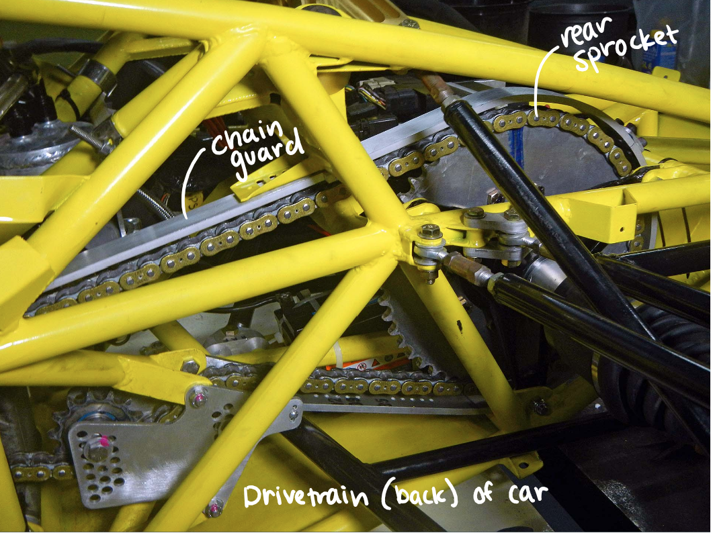
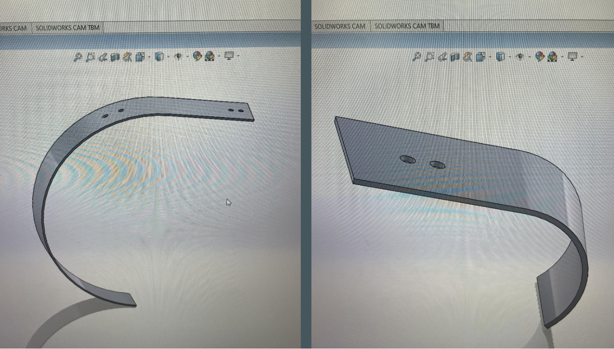
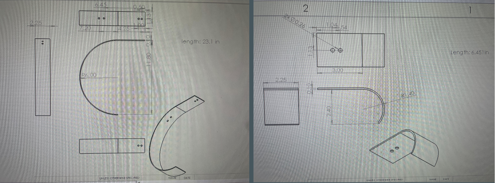
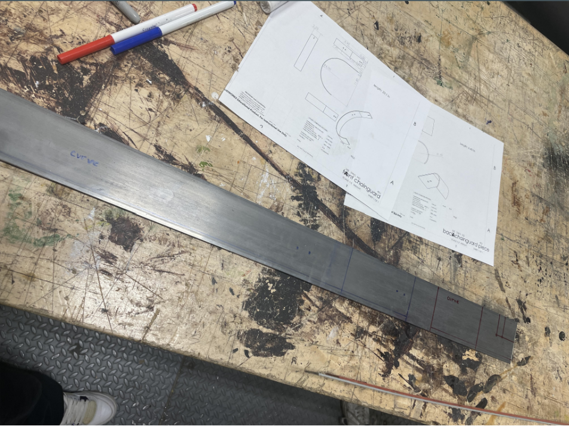
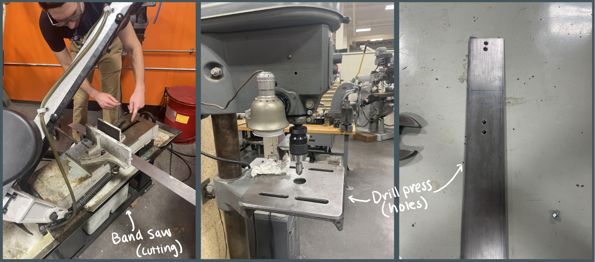
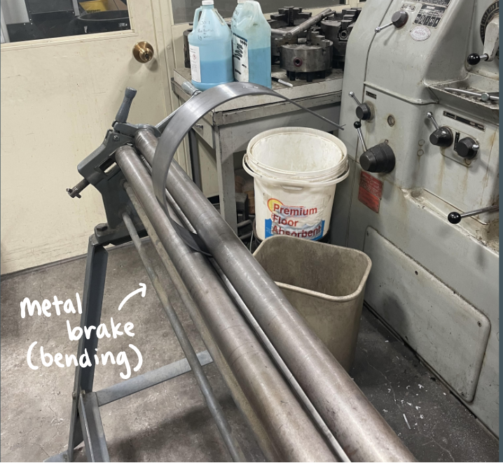
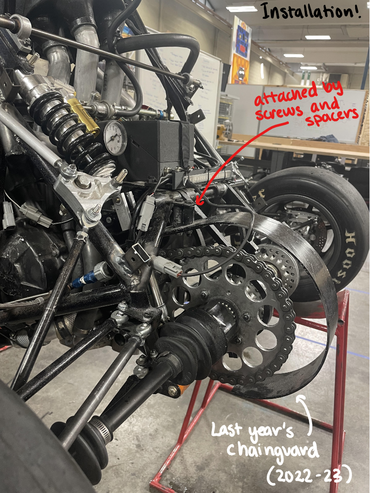

Brown Formula Racing
Each year, the Brown Formula Racing team develops and races a formula-style racecar for FSAE Michigan, the largest collegiate engineering and racing competition of its kind in North America.
The chainguard is a part of the drivetrain of the car which connects the wheels to the engine and moves the car. It covers a large gear in the back of the car called the rear sprocket.
The design
The design of the chainguard can be altered in many ways including changing the dimensions, material, and shape. One of the biggest issues with the previous year's chainguard was the efficiency of the installation. During competition season, many parts of the car, especially in the drivetrain, might need to be quickly taken out and altered. It was difficult to efficiently remove and attach a large piece of metal in the small space around the rear sprocket. This greatly affected my decision to design the new chainguard as two pieces and make it a tighter fit to the sprocket.
FSAE Requirements for the Chain:
- Cover the chain or belt from the drive sprocket to the driven sprocket/chain wheel/belt or pulley
- Start and end no higher than parallel to the lowest point of the chain wheel/belt/pulley
- Any gaps between pieces must be less than 3 mm
- Be made of 2.66 mm (0.105 inch) minimum thickness steel (no alternatives are allowed)
- Have a minimum width equal to three times the width of the chain
- Be centered on the center line of the chain
- Remain aligned with the chain under all conditions
CAD Modeling
After taking measurements of the rear sprocket and deciding on the design, I turned to SolidWorks to create a CAD model of each piece which allowed me to also test the dimensions in the rest of the car to make sure the chainguard would fit within the given space.
Sketching
To make measurements on the metal easier, I turned each 3D CAD model into 2D sketches which allowed me to find the dimensions of each piece and the location of the holes and the bend. I then sketched those dimensions out on the steal beam.
 Machining
Using the band saw, I cut each piece and then created the holes with the drill press. Finally, each piece of metal was bent with the metal brake.
 And the last step was the installation! (Here is a photo of last year's chainguard since the car isn't ready yet to install the one we made this year).
